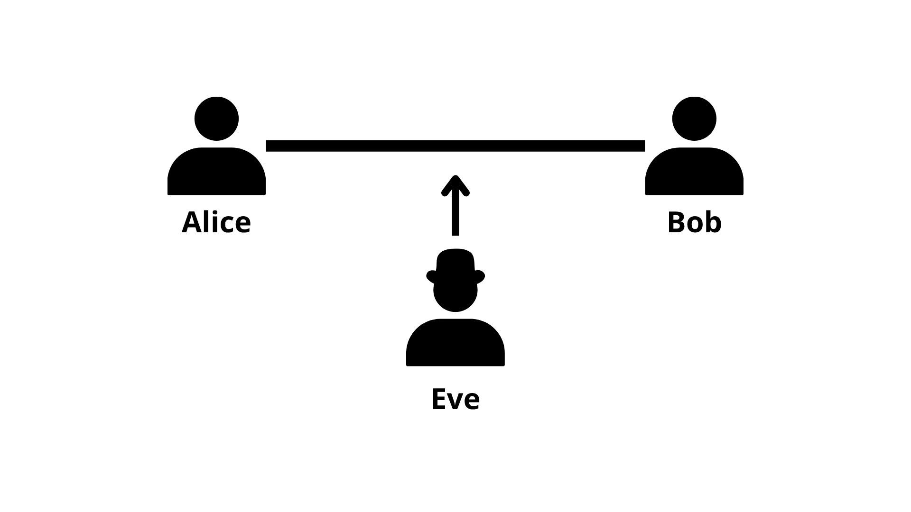

Fundamentos da Comunicação Segura#
A comunicação segura trata do problema de transmitir informação entre duas partes de forma que terceiros não autorizados não consigam acessar ou modificar o conteúdo da mensagem. Esse é um tema central em áreas como computação, redes e teoria da informação.
De modo geral, a segurança de um sistema de comunicação envolve três aspectos principais: confidencialidade, integridade e autenticidade. A confidencialidade garante que apenas os destinatários tenham acesso à mensagem, a integridade assegura que ela não foi alterada, e a autenticidade permite verificar quem está se comunicando.
Esses três objetivos podem ser interpretados como diferentes formas de controlar o fluxo de informação em um sistema: quem pode acessar, quem pode modificar e quem pode produzir mensagens válidas.
Na prática, esses objetivos são tradicionalmente alcançados por meio da criptografia clássica. No entanto, essa abordagem possui limitações importantes, especialmente quando analisada do ponto de vista da teoria da informação e da mecânica quântica.
Segurança na comunicação clássica#
Na comunicação clássica, a segurança geralmente depende de algoritmos criptográficos que utilizam chaves. A ideia é transformar a mensagem original em uma forma aparentemente aleatória, de modo que apenas quem possui a chave correta consiga recuperá-la.
Esses métodos são baseados em problemas matemáticos considerados difíceis de resolver. Assim, a segurança depende do fato de que um possível adversário não possui recursos suficientes para quebrar o sistema em tempo viável.
Esse tipo de segurança é chamado de segurança computacional, pois depende diretamente do poder computacional disponível. Em outras palavras, assume-se que certos problemas são difíceis de resolver na prática, mesmo que sejam teoricamente possíveis.
Apesar de funcionar bem na prática, essa abordagem não é absoluta. Com o avanço da tecnologia — seja por novos algoritmos, aumento de poder computacional ou novos modelos de computação — esses sistemas podem se tornar vulneráveis.

Além disso, do ponto de vista da teoria da informação, esses sistemas não impedem que um adversário tenha acesso ao sinal transmitido — apenas tornam sua interpretação difícil. Isso significa que a segurança não está associada ao canal físico, mas ao método de codificação utilizado.
Segurança baseada em teoria da informação#
Uma alternativa é analisar a segurança a partir da teoria da informação. Nesse caso, o objetivo não é apenas dificultar o acesso à mensagem, mas garantir que um interceptador não consiga extrair informação relevante, independentemente de seu poder computacional.
Esse tipo de abordagem é conhecido como segurança incondicional, pois não depende de suposições sobre a capacidade do adversário.
Do ponto de vista informacional, isso significa que a variável observada pelo interceptador não possui correlação com a mensagem original, ou seja, a informação mútua entre elas é nula.
Um exemplo clássico é o one-time pad, em que a mensagem é combinada com uma chave aleatória do mesmo tamanho. Quando usado corretamente, esse método garante que a mensagem interceptada não revela nenhuma informação sobre o conteúdo original.
Apesar disso, ele apresenta dificuldades práticas, principalmente na distribuição segura das chaves, que precisam ser aleatórias, secretas e do mesmo tamanho da mensagem.
Exemplo
Considere uma mensagem binária:
e uma chave aleatória do mesmo tamanho:
A mensagem criptografada é obtida aplicando a operação XOR bit a bit:
Calculando:
Para recuperar a mensagem original, o receptor aplica novamente XOR com a mesma chave:
Observe que, sem conhecer a chave, o valor de \(c\) pode corresponder a qualquer mensagem possível com a mesma probabilidade. Isso significa que o interceptador não obtém nenhuma informação sobre \(m\) a partir de \(c\).
Esse exemplo ilustra por que o one-time pad fornece segurança perfeita sob condições ideais, embora sua aplicação prática seja limitada pela necessidade de compartilhar chaves aleatórias do mesmo tamanho da mensagem.
Limitações da abordagem clássica#
Mesmo com técnicas avançadas, a comunicação clássica possui algumas limitações importantes.
Uma delas é que a informação pode ser copiada perfeitamente. Isso significa que um interceptador pode capturar e duplicar a mensagem sem necessariamente ser detectado. Esse comportamento é consequência direta do fato de que estados clássicos podem ser medidos e reproduzidos sem alteração.
Além disso, a distribuição de chaves seguras continua sendo um problema central. Em muitos sistemas, é necessário assumir a existência de um canal previamente seguro para compartilhar a chave, o que cria uma dependência circular.
Do ponto de vista mais fundamental, esses aspectos mostram que a segurança, no modelo clássico, não está diretamente associada às leis físicas do sistema, mas sim a construções matemáticas e suposições externas.
Segurança em sistemas quânticos#
A comunicação quântica propõe uma abordagem diferente, na qual a segurança está associada às próprias propriedades físicas da informação.
Sistemas quânticos possuem características que não aparecem no mundo clássico, como:
a impossibilidade de copiar estados quânticos arbitrários (No-cloning theorem)
a perturbação causada por medições
limites fundamentais na extração de informação
Essas propriedades implicam que qualquer tentativa de interceptação envolve uma interação com o sistema, o que tende a alterar seu estado. Essa alteração pode ser detectada por meio de medições estatísticas realizadas pelos participantes da comunicação.
Do ponto de vista da teoria da informação, isso significa que a obtenção de informação por um adversário está associada à introdução de ruído no sistema, estabelecendo um trade-off entre informação e perturbação.
Motivação para comunicação quântica#
Diante dessas diferenças, a comunicação quântica surge como uma forma de expandir os modelos tradicionais de comunicação.
Ela permite estudar:
como transmitir informação usando estados quânticos
quais são os limites fundamentais dessa transmissão
como explorar propriedades físicas para garantir segurança
Além disso, a comunicação quântica fornece um modelo mais geral de informação, no qual a informação clássica aparece como um caso particular.
Nos próximos tópicos, esses conceitos serão utilizados para analisar protocolos específicos, como distribuição de chaves e teletransporte, e entender como a informação pode ser transmitida e protegida em sistemas quânticos.